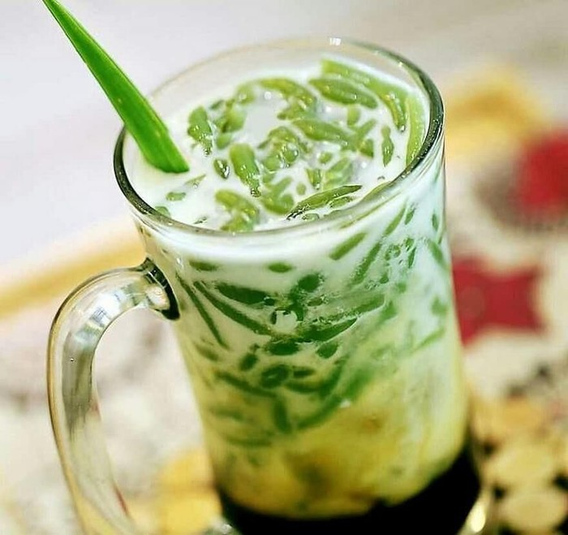

Es Cendol
Cendol is an iced sweet dessert that contains droplets of green rice flour jelly, coconut milk and palm sugar syrup. It is commonly found in Southeast Asia and is popular in Indonesia, Malaysia, Brunei, Cambodia, East Timor, Laos, Vietnam, Thailand, Singapore, and Myanmar. Wikipedia